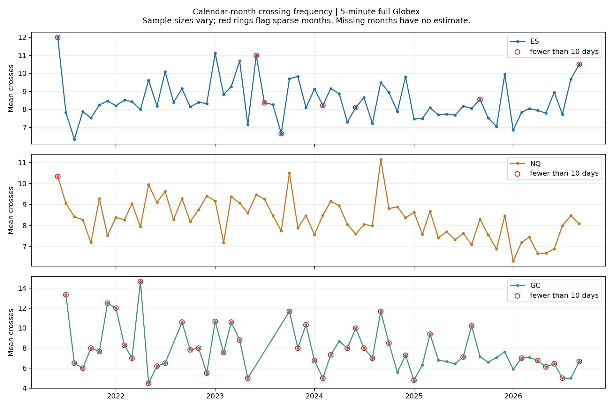
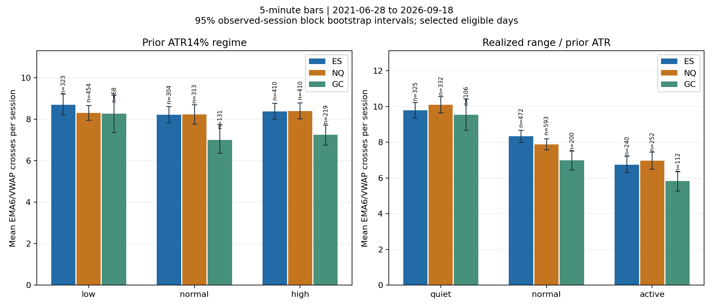

On 5-minute closes across the common calendar (June 28, 2021–September 18, 2026), mean full-Globex crossings per session were ES 8.42 (n=1037), NQ 8.31 (n=1177), GC 7.33 (n=418). Typical medians were 8, 8 and 7 respectively.
Prior ATR regime showed modest and inconsistent separation. Low/high ATR-bin means were ES 8.69/8.37, NQ 8.30/8.40, GC 8.26/7.24. Their descriptive intervals overlap; this study does not establish a useful advance forecast from ATR alone.
Realized range relative to pre-session ATR separated counts more clearly. Quiet/active day means were ES 9.79/6.75, NQ 10.10/6.96, GC 9.54/5.83. Quiet means range <0.75 ATR; active means range ≥1.25 ATR. This classification is known after the session.
The same quiet-greater-than-active pattern remains on the 357 shared eligible dates: ES 9.74/6.40, NQ 9.75/6.56, GC 9.48/5.56. This reduces calendar-composition differences, but retains conservative retrospective sample selection.
The pattern is consistent with repeated rotations around VWAP on relatively contained days. That explanation is an interpretation, not a tested causal mechanism. It does not tell us the eventual range at the open or establish profitable entries.
Timeframe matters: on 2-minute bars the corresponding full-session means were ES 13.19, NQ 12.95, GC 11.26. During 09:30–16:00 New York, 5-minute means were ES 2.25, NQ 2.18, GC 1.25.
Annual and monthly results are descriptive breakdowns, not stable seasonality estimates. Full-period GC comparisons use only 418 selected common-calendar days versus 1,037 ES and 1,177 NQ; many GC monthly cells are small. All table rows retain support and small-cell flags. Years 2021 and 2026 are partial.
Descriptive study, protocol 1.0.0. Main comparison: 2021-06-28 through 2026-09-18, 5-minute closes. Each count is a completed-bar EMA6 crossing of the moving, 18:00 New York anchored VWAP. A touch alone is not a crossing; departure from equality is. Zero-cross sessions remain in the denominator.


| product | sessions | mean_crosses | median_crosses | p25_crosses | p75_crosses | p90_crosses | mean_ci95_low | mean_ci95_high |
| ES | 1037 | 8.42 | 8.00 | 6.00 | 11.00 | 14.00 | 8.17 | 8.68 |
| GC | 418 | 7.33 | 7.00 | 4.00 | 10.00 | 13.00 | 6.94 | 7.73 |
| NQ | 1177 | 8.31 | 8.00 | 5.00 | 11.00 | 13.40 | 8.09 | 8.53 |
Mean intervals are 95% circular moving-block bootstrap intervals (2,000 resamples; blocks of five observed sessions). Medians and percentiles describe the distribution of daily counts. Counts are sensitive to timeframe and equality convention.
ATR14% is the last completed daily value available at the Globex open, ranked against its preceding 252 daily observations separately for each product. Low/normal/high use fixed thirds. The rank uses complete daily history, not just the selected VWAP sample.
| product | regime | sessions | mean_crosses | median_crosses | mean_ci95_low | mean_ci95_high |
| ES | high | 410 | 8.37 | 8.00 | 7.99 | 8.76 |
| ES | low | 323 | 8.69 | 8.00 | 8.21 | 9.21 |
| ES | normal | 304 | 8.20 | 8.00 | 7.81 | 8.60 |
| GC | high | 219 | 7.24 | 7.00 | 6.75 | 7.71 |
| GC | low | 68 | 8.26 | 8.00 | 7.36 | 9.16 |
| GC | normal | 131 | 7.00 | 6.00 | 6.35 | 7.72 |
| NQ | high | 410 | 8.40 | 8.00 | 8.02 | 8.78 |
| NQ | low | 454 | 8.30 | 8.00 | 7.93 | 8.65 |
| NQ | normal | 313 | 8.23 | 8.00 | 7.77 | 8.69 |
Quiet <0.75 ATR; normal 0.75–<1.25 ATR; active ≥1.25 ATR. This full-session high-low classification is only known after the day; it is different from the background ATR regime.
| product | regime | sessions | mean_crosses | median_crosses | mean_ci95_low | mean_ci95_high |
| ES | active | 240 | 6.75 | 6.00 | 6.31 | 7.22 |
| ES | normal | 472 | 8.33 | 8.00 | 7.99 | 8.67 |
| ES | quiet | 325 | 9.79 | 9.00 | 9.36 | 10.22 |
| GC | active | 112 | 5.83 | 6.00 | 5.27 | 6.35 |
| GC | normal | 200 | 7.00 | 6.00 | 6.46 | 7.51 |
| GC | quiet | 106 | 9.54 | 9.00 | 8.66 | 10.42 |
| NQ | active | 252 | 6.96 | 6.00 | 6.50 | 7.44 |
| NQ | normal | 593 | 7.89 | 8.00 | 7.58 | 8.19 |
| NQ | quiet | 332 | 10.10 | 10.00 | 9.64 | 10.55 |
| product | year | sessions | mean_crosses | median_crosses | p90_crosses | small_cell |
| ES | 2021 | 101 | 7.81 | 8.00 | 13.00 | False |
| ES | 2022 | 239 | 8.64 | 8.00 | 14.00 | False |
| ES | 2023 | 155 | 9.23 | 9.00 | 15.00 | False |
| ES | 2024 | 159 | 8.56 | 8.00 | 13.20 | False |
| ES | 2025 | 216 | 7.94 | 8.00 | 14.00 | False |
| ES | 2026 | 167 | 8.21 | 8.00 | 13.00 | False |
| GC | 2021 | 15 | 8.93 | 8.00 | 15.00 | True |
| GC | 2022 | 55 | 7.93 | 8.00 | 13.60 | False |
| GC | 2023 | 35 | 9.17 | 9.00 | 14.00 | False |
| GC | 2024 | 62 | 7.56 | 7.00 | 11.90 | False |
| GC | 2025 | 165 | 7.05 | 7.00 | 12.00 | False |
| GC | 2026 | 86 | 6.28 | 6.00 | 11.50 | False |
| NQ | 2021 | 115 | 8.34 | 8.00 | 13.60 | False |
| NQ | 2022 | 236 | 8.86 | 9.00 | 14.00 | False |
| NQ | 2023 | 217 | 8.81 | 8.00 | 14.00 | False |
| NQ | 2024 | 213 | 8.57 | 8.00 | 13.80 | False |
| NQ | 2025 | 224 | 7.77 | 7.00 | 14.00 | False |
| NQ | 2026 | 172 | 7.30 | 7.00 | 12.00 | False |
2021 and 2026 are partial calendar years. GC coverage is especially sparse and selected. Yearly differences combine changing conditions with changing sample composition.
The common US window is 09:30–16:00 New York; for GC this is not its exchange-specific regular session. GC 08:20–13:30 counts are also in the saved tables.
| product | sessions | mean_crosses | median_crosses | p25_crosses | p75_crosses | p90_crosses | mean_ci95_low | mean_ci95_high |
| ES | 1037 | 2.25 | 2.00 | 1.00 | 3.00 | 5.00 | 2.13 | 2.38 |
| GC | 418 | 1.25 | 1.00 | 0.00 | 2.00 | 4.00 | 1.09 | 1.41 |
| NQ | 1177 | 2.18 | 2.00 | 1.00 | 3.00 | 5.00 | 2.07 | 2.30 |
2-minute full-Globex comparison:
| product | sessions | mean_crosses | median_crosses | p25_crosses | p75_crosses | p90_crosses | mean_ci95_low | mean_ci95_high |
| ES | 1037 | 13.19 | 13.00 | 9.00 | 17.00 | 21.00 | 12.81 | 13.57 |
| GC | 418 | 11.26 | 11.00 | 7.00 | 15.00 | 19.00 | 10.68 | 11.80 |
| NQ | 1177 | 12.95 | 13.00 | 9.00 | 17.00 | 21.00 | 12.62 | 13.29 |
The following compares only eligible dates shared by ES, NQ and GC within the common calendar, reducing calendar-composition differences. Selection remains retrospective.
| product | sessions | mean_crosses | median_crosses | p25_crosses | p75_crosses | p90_crosses | mean_ci95_low | mean_ci95_high |
| ES | 357 | 8.18 | 8.00 | 5.00 | 11.00 | 14.00 | 7.75 | 8.62 |
| GC | 357 | 7.24 | 7.00 | 4.00 | 10.00 | 13.00 | 6.82 | 7.65 |
| NQ | 357 | 7.76 | 8.00 | 5.00 | 10.00 | 13.00 | 7.35 | 8.15 |
Calendar-month statistics, month-of-year statistics, annual statistics, count distributions, daily observations, crossing events, and coverage are saved alongside this report. Every table includes denominators. Cells with fewer than 30 sessions are flagged; unobserved months are absent evidence, never zero-cross months.
Reproduction: use the frozen source, settings, input lock, environment lock and exact commands in the run manifest. Rendering reads saved tables; verification and integrity have separate receipts.